Basen
Własny rytm, własna przestrzeń
Basen w kameralnym otoczeniu naturalnego kamienia i miękkiego światła. Miejsce na poranne pływanie, spokojne zakończenie dnia i chwilę tylko dla siebie.
Codzienny komfort, który nie wymaga wychodzenia z budynku.
Nowoczesna klasyka
Architektura inspirowana najlepszymi tradycjami luksusowego modernizmu lat 30. Szlachetne materiały, wysokie przestrzenie i wyjątkowe części wspólne – basen, jacuzzi, siłownia. W samym sercu Łodzi, vis-à-vis parku im. Staszica.
N75 powstaje z szacunku do architektury, której wartość nie przemija. Tworzymy go z pieczołowitością, dbając o proporcje, jakość materiałów i każdy detal, który składa się na harmonijną całość.
Inspirujemy się najlepszymi tradycjami modernizmu, łącząc ponadczasową estetykę z komfortem współczesnego życia. Wierzymy, że prawdziwa jakość nie potrzebuje sezonowych trendów – broni się przez lata.
Nie myślimy wyłącznie o dniu dzisiejszym. Projektujemy z myślą o przyszłości, o mieszkańcach, którzy będą tu tworzyć swoją codzienność, i o kolejnych pokoleniach, dla których N75 może pozostać równie wartościowym miejscem.
Architektura na lata. Wartość na pokolenia.
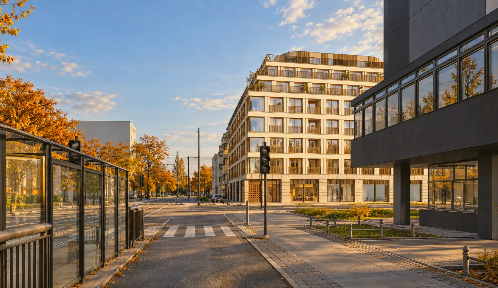
Architektura oparta na proporcjach, harmonii i estetyce, która pozostaje aktualna mimo upływu lat.
Uważność na materiały, wykończenie i każdy element, który składa się na jakość całości.
Funkcjonalność, światło i komfort zaprojektowane z myślą o codziennym życiu, nie o chwilowej modzie.
Miejsce, które może stać się częścią rodzinnej historii i zachować znaczenie dla kolejnych pokoleń.
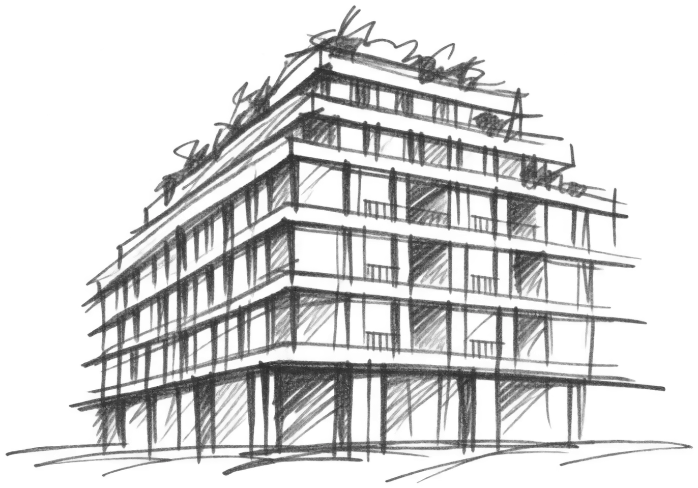
Architektura nie jest miejscem na kompromisy: to arka przechowująca życie nasze i naszych bliskich.Poznaj manifest N75
Modernizm – styl, w którym po prostu najlepiej się mieszka.
Modernizm zmienił sposób myślenia o mieszkaniu. Postawił człowieka w centrum architektury, nadając szczególne znaczenie światłu, przestrzeni, funkcjonalności i jakości codziennego życia.
N75 rozwija tę ideę we współczesnym języku. Harmonijne proporcje, duże przeszklenia i starannie dobrane materiały tworzą architekturę, która jest jednocześnie elegancka i racjonalna.
Nie szukamy efektu na chwilę. Projektujemy budynek, który naturalnie wpisuje się w miasto i pozostaje wierny zasadom dobrej architektury.
Łódzki modernizm. Nowy rozdział.
Łódzki modernizm pisze nowy rozdział – N75.
Modernistyczna pierzeja ulicy Narutowicza – rysunek poglądowy
Czy istnieje przepis na dobrą architekturę? Choć zapewne każdy architekt poda własny, to jednak istnieje uniwersalna receptura.
Z połączenia funkcjonalizmu, nowoczesności i szlachetnych materiałów na początku XX wieku narodził się modernizm – recepta na dobrą jakość życia w mieście. To kanon dobrej architektury mieszkaniowej, kultywowany do dziś od Gdyni, przez Berlin, po Nowy Jork. N75 sięga po ten sam kanon: proporcję bryły, rytm elewacji i geometrię detalu.
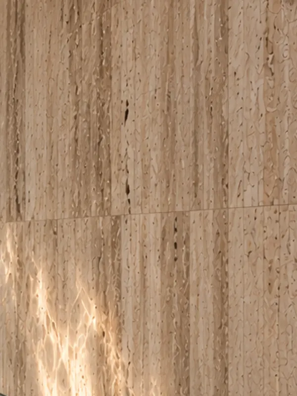
Elewacja · strefa wellness
Naturalny kamień o ciepłej tonacji i niepowtarzalnej strukturze. Nadaje przestrzeniom spokojny, szlachetny charakter.
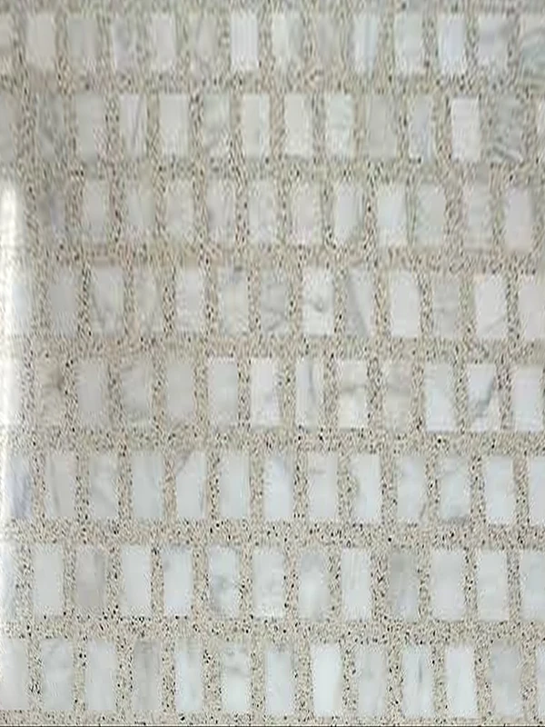
Posadzki
Klasyczny materiał w nowoczesnym wydaniu. Subtelny rysunek kruszywa i marmuru podkreśla modernistyczną tożsamość wnętrz.
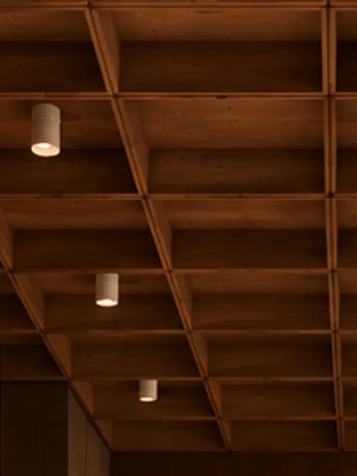
Sufity kasetonowe · drzwi · okładziny
Głęboka barwa i naturalne usłojenie drewna wprowadzają ciepło, równoważąc mineralny charakter kamiennych powierzchni.
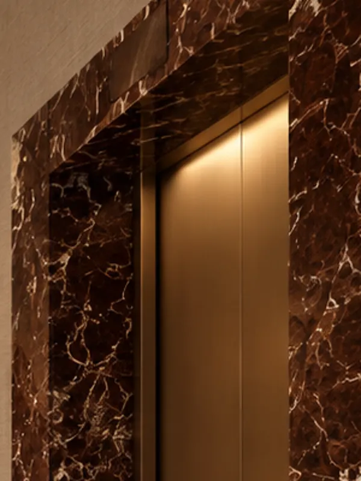
Portale wind · klatki schodowe
Wyrazisty, szlachetny akcent w starannie wybranych detalach. Materiał, który nadaje wnętrzom indywidualność bez nadmiaru dekoracji.
Kunszt, który widać w detalu i czuć pod dłonią.
Foyer z recepcją i concierge wita jak lobby butikowego hotelu. Korytarze wyłożone tkaniną, lastryko i ciepłe światło – subtelność i rzemiosło sprawiają, że droga do drzwi mieszkania jest częścią domu.
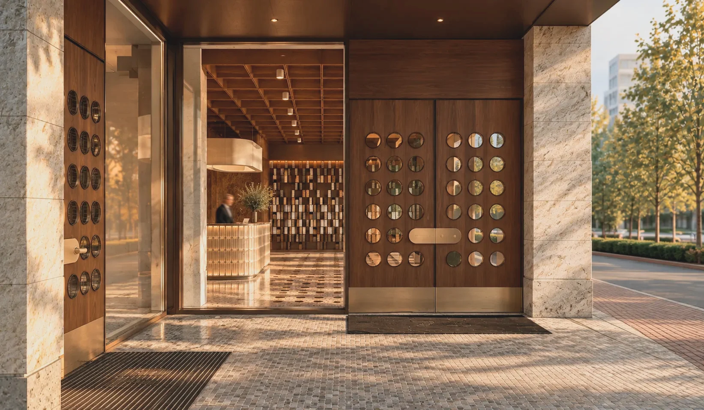
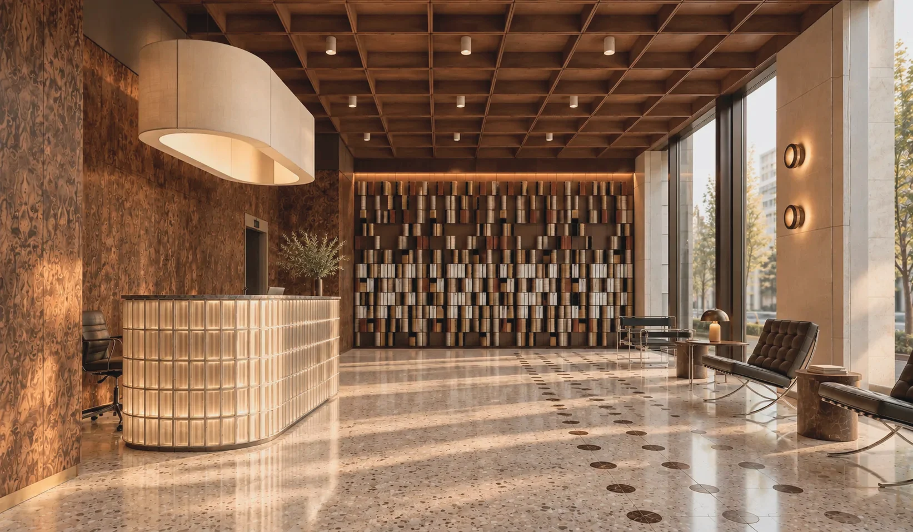
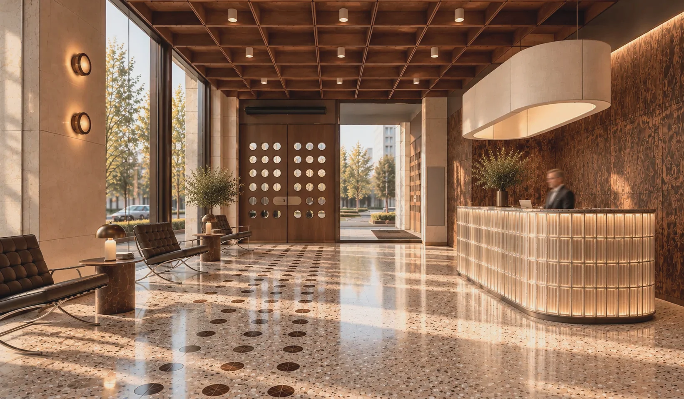
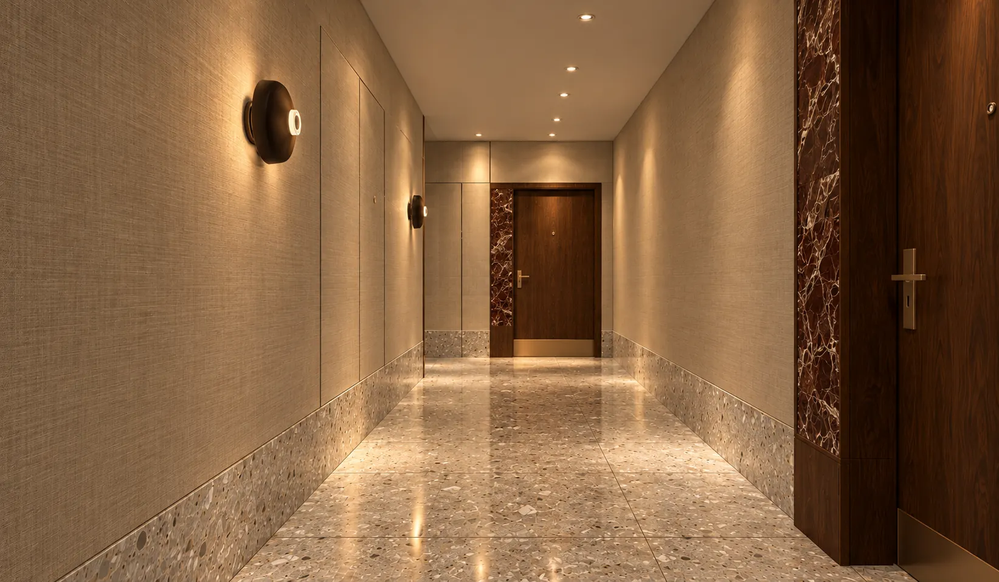
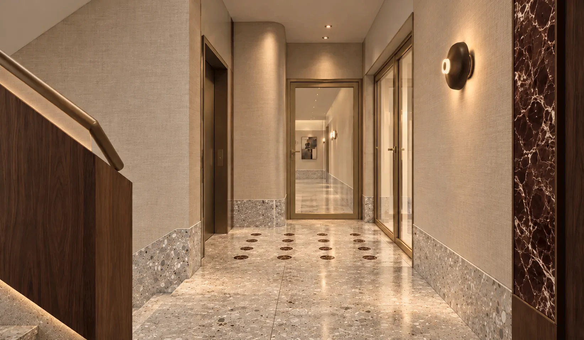
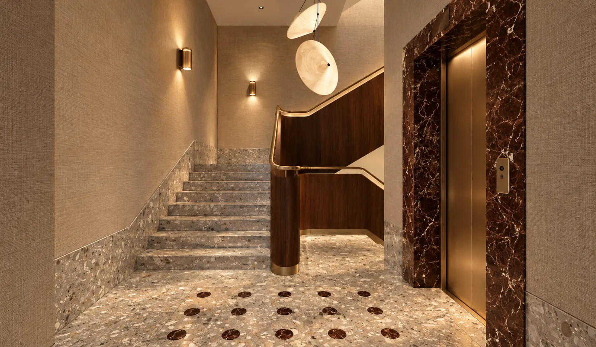
Więcej czasu na dobre życie. Basen, jacuzzi i strefa wellness z sauną, siłownia oraz zielone atrium tworzą w N75 codzienną przestrzeń dla ruchu, regeneracji i spokoju.
Wszystko w budynku, bez dojazdów i karnetów. A tuż za progiem, po drugiej stronie ulicy, czeka zieleń parku im. Staszica – na poranny bieg i wieczorny spacer.
Własny rytm, własna przestrzeń
Basen w kameralnym otoczeniu naturalnego kamienia i miękkiego światła. Miejsce na poranne pływanie, spokojne zakończenie dnia i chwilę tylko dla siebie.
Codzienny komfort, który nie wymaga wychodzenia z budynku.
Sztuka odpoczynku
Ciepło wody, kojący hydromasaż i kameralna sauna tworzą przestrzeń, w której łatwiej oderwać się od tempa miasta.
To miejsce na regenerację po aktywnym dniu i własne rytuały odpoczynku.
Aktywność na własnych zasadach
Kameralna siłownia zaprojektowana jako integralna część strefy komfortu mieszkańców. Naturalne materiały, staranne oświetlenie i widok na zieleń tworzą otoczenie sprzyjające regularnej aktywności.
Bez dodatkowych dojazdów. W rytmie dopasowanym do Ciebie.
Zieleń w sercu budynku
Wewnętrzne atrium wnosi do architektury naturalną równowagę. Roślinność, organiczne formy i starannie dobrane materiały tworzą spokojny, zielony akcent w przestrzeni N75.
Miejsce, które pozwala odetchnąć od miejskiego tempa, pozostając w samym centrum Łodzi.
50 apartamentów od 32 do 167 m², od kompaktowych studiów po dwupoziomowe apartamenty z tarasami na ostatnich kondygnacjach, oraz 3 lokale usługowe na parterze. Przemyślana kompozycja układów i 3 metry wysokości tworzą przestrzeń, która zachowuje wartość na lata. Wybierz piętro na makiecie, a potem mieszkanie na rzucie.
Powierzchnie i ceny brutto lokali według cennika z 15.09.2026. Ceny i statusy lokali mają charakter informacyjny i nie stanowią oferty w rozumieniu Kodeksu cywilnego. Historia zmian cen każdego lokalu jest dostępna w jego karcie.
N75 ma rodowód w modernistycznych „luksach” – kamienicach, które w międzywojennej Warszawie, Gdyni i Łodzi wyznaczały kanon miejskiego zamieszkania. Kontynuujemy to dziedzictwo.
Naprzeciwko – park im. Staszica z wiekowymi drzewami. Kilka minut spacerem – Szpital im. Barlickiego, kliniki Uniwersytetu Medycznego, uczelnie i biurowce centrum. To adres stworzony także dla lekarzy i osób pracujących w okolicznych biurowcach: do pracy pieszo, a po pracy park za oknem.
Filozofia i gust towarzyszące inwestycji przełożyły się na świadomy wybór pracowni architektonicznej i współpracowników.
UNIQUM 5 sp. z o.o. Budujemy z pieczołowitością, stawiając na szlachetne materiały, kunszt wykonania i wartość, która zostaje na lata.
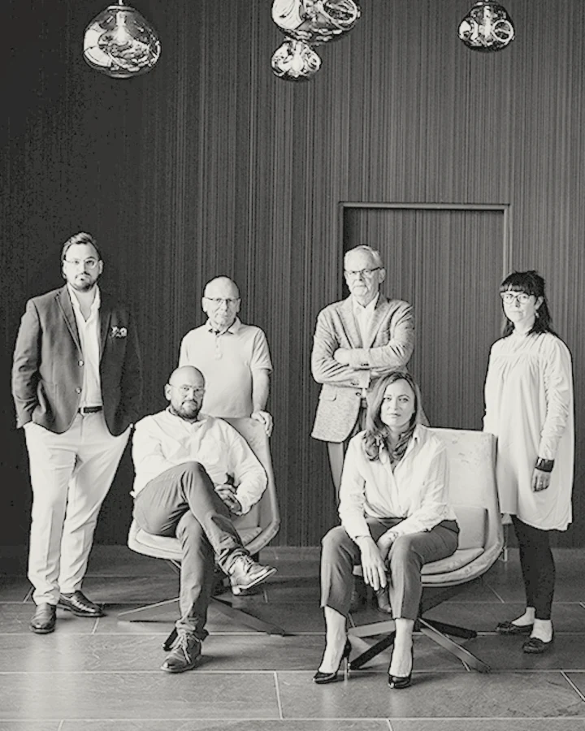
Łódzka pracownia, która ma w portfolio prace przy wybitnych obiektach lokalnego modernizmu, na czele z jego perłą – dawnym Domem Strzelca, późniejszym Łódzkim Domem Kultury.
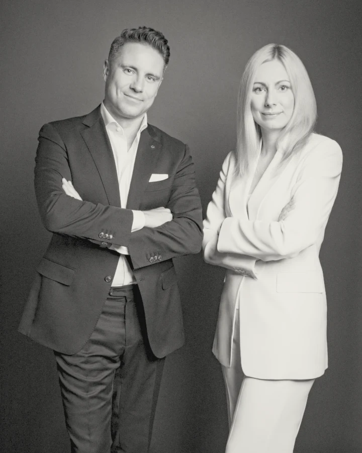
Badaczka i popularyzatorka architektury, związana z Instytutem Detalu. Jej perspektywa pomaga osadzić N75 w szerszej opowieści o modernizmie, jakości przestrzeni i architektonicznej tożsamości Łodzi.
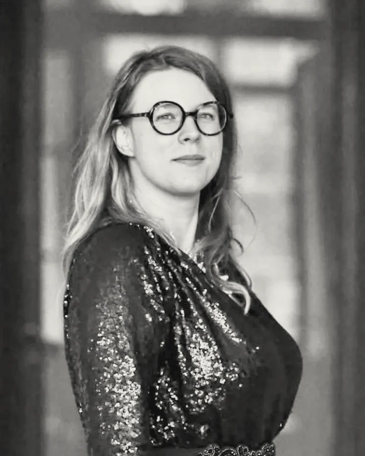
24 miesiące od startu budowy
Poznaj N75 osobiście.
Przygotujemy prezentację apartamentów dopasowanych do Twoich oczekiwań. Pokażemy architekturę, materiały, rzuty i dostępne lokale. Bez pośpiechu, w dogodnym dla Ciebie terminie.